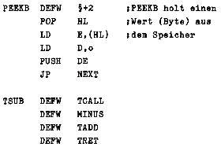
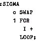

Nascom Journal |
August 1981 · Ausgabe 8 |
Routine mit dem Namen TCALL beginnen, die den CALL-Befehl ersetzt. Sie gibt den alten PC (des Interpreters) auf den Stack (des Interpreters!) und ersetzt ihn durch die jeweilige neue Adresse. Ebenso muß jede Routine im Fädelcode mit einem besonderen Rückkehrbefehl (TRET) abgeschlossen werden. Auch die Routinen im Maschinencode weisen noch eine Besonderheit auf: sie tragen ihre eigene Adresse vorweg, damit sie von NEXT aufgerufen werden können. Im Assemblertext sieht das etwa so aus:
Die letztere, sehr einfache Routine im Fädelcode subtrahiert den obersten Stackwert vom zweitobersten und gibt das Ergebnis wieder auf den Stack. Es werden dabei die beiden Routinen MINUS (negiert den Stack) und TADD (addiert die beiden obersten Stackwerte) aufgerufen. Wie man sieht, wird der gesamte Fädelcode im Assembler mit dem Pseudo-Opcode DEFW geschrieben.
Eingaben des Anwenders werden vom äußeren Interpreter als Zahlen (Umwandlung!) oder als Befehlsworte ausgewertet. Diese Worte sucht er in einem „Wörterbuch“ und findet dort auch die Adresse der zugehörigen Routine. Er unterscheidet sich von den Interpretern anderer Programmiersprachen eigentlich nur durch den Eingabemodus; ebenso wie bei HP-Rechnern muß die Eingabe in der umgekehrten polnischen Notation erfolgen, d.h., es müssen zunächst die Argumente eingegeben werden, dann folgt erst die zugehörige Operation, z.B. 5 8 + und der Interpreter antwortet mit dem Ergebnis. Diese Notation ist bei FORTH zwar üblich, könnte aber ebensogut durch eine andere, z.B. die algebraische, ersetzt werden.
Vielleicht das Erstaunlichste an FORTH ist, daß bereits in der hier vorgestellten Schmalspurversion ein Compiler enthalten ist, der die Sprache um vom Benutzer definierte Befehle erweitert. Diese Befehle werden aus den Befehlswörtern des Interpreters zusammengestellt mit Hilfe einiger zusätzlicher Routinen, die in einem eigenen „Wörterbuch“ des Compilers verfügbar gemacht werden. Diese Routinen sind aber gerade besonders interessant, denn es handelt sich dabei um 3 verschiedene Arten der logischen Schleifenbildung: IF-THEN-ELSE; REPEAT-LOOP (REPEAT-UNTIL); FOR-LOOP (FOR-NEXT)
Aus diesen Schleifenkonstruktionen und den Befehlsworten des Interpreters werden dann neue Befehle erzeugt, denen bei der Compilierung ein Name zugewiesen wird, der in das Befehlsverzeichnis des Interpreters eingetragen wird. Überhaupt besteht die gesamte Programmierung bei FORTH aus der Compilierung neuer Befehle, die dann stufenweise immer komplexer werden, bis zuletzt die gwünschte Funktion (das „Programm“) im Interpreter vorhanden ist. So ergibt sich praktisch von selbst die „strukturierte Programmierung“, von der heute soviel geredet wird.
Ein einfaches Beispiel einer Compilierung der Funktion SIGMA (= Summe von 1 bis n) soll den Abschluß dieser Einleitung bilden. Es werden 2 Routinen benutzt: + (vergl. oben TADD!) und SWAP (vertauscht auf dem Stack die beiden oberen Werte). Das „:“ startet die Compilierung, das „;“ beendet sie:
Die Funktion erwartet einen Wert auf dem Stack. Auf die Eingabe: 10 SIGMA, antwortet der Interpreter nun mit dem Wert: 55. Die Funktion „I“ gibt übrigens den Wert der innersten Schleifenvariable auf den Stack. Die FOR-LOOP-Schleife wird so lange ausgeführt, bis der Eingabewert (auf dem Stack) erreicht ist.
James, John: FORTH for Microcomputers
Dr.Dobb’s Journal, Vol.3,Issue 5,P.21
Fritzson, Richard: Write Your Own FORTH Interpreter, Microcomputing, Februar u. März 1981
| Seite 4 von 24 |
|---|